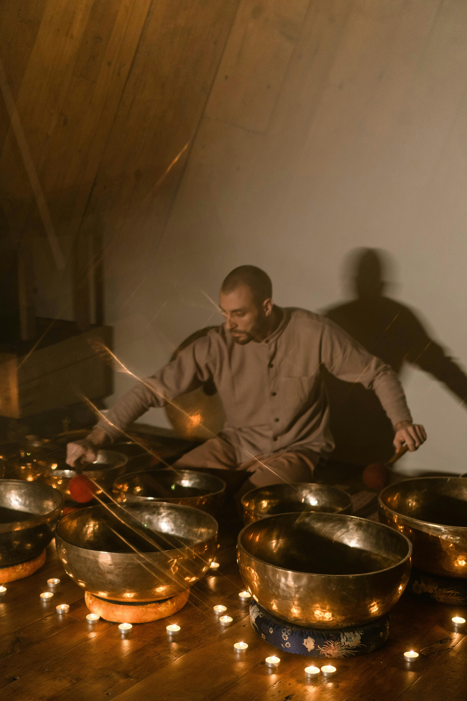

ABOUT
GREAT TO CONNECT WITH YOU
I'M SHRAVANI

Welcome to Arka Holistic! I’m a yoga teacher, sound healer, and passionate advocate for holistic well-being. With a background in the arts, a BCA degree, and nearly a decade in the corporate world, I discovered the importance of balance and transitioned into wellness. Certified by Svyasa university in 2016. Since then I have been teaching both group and personal sessions designed according to health ailments. Have taught therapeutic yoga to various health disorders. I have lead corporate workshops for international yoga day for the theme “Yoga at workspace”
My path into sound healing blossomed in Rishikesh, where I trained and mentored over 100 sound healers from around the world. Blending traditional wisdom with contemporary methods, I offer transformative sessions that foster deep inner harmony. At Arka Holistic, I integrate my love for dance, painting, and culture into every offering, creating a truly holistic journey of well-being for those I work with.

My journey includes teaching yoga at naturopathy centers, where I collaborated with healthcare professionals to deliver yoga as a core part of holistic healing programs. This experience has deepened my understanding of how yoga can complement natural therapies, offering relief and support for a range of health concerns.
Through conscious breath and sacred sound, the mind dissolves and the spirit aligns.
Through customized therapeutic yoga sessions, I aim to empower individuals to restore balance, enhance vitality, and cultivate long-term wellness. Whether you seek to manage a specific health condition or embrace a preventive lifestyle, my approach is tailored to meet your unique needs.